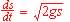
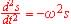
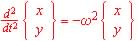
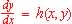
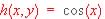

Introduktion til FPRO
som matematikprogram
Flemming Jørgensen, Næstved Gymnasium og HF
Indholdsfortegnelse
1: Indledning. Side 1
De basale ting
2: Grafer, søjler og værdier. Side 3
2a1: Tegner to parabler ved hjælp af Søjler
3: Variabeltyper. Klar-løkke vinduet. Funktion. Side 6
Fitning
4: Fitning generelt. Bedste Rette Linje, Bedste Polynomium og Bedste funktion. Side 8
5: Fitning ved brug af Bedste Funktion. Side 11
Statistik og tilfældighed
6: Statistik. Brug af Procedure. Side 12
6a: Laver søjlediagram over observationssæt ( radioktive tællinger) Procedure der tegner et kvadrat.
6b: Er fordelingen fra 6a en Poisson-fordeling ? Procedure der sorterer observationer i intervaller
6c: Animation af rullende cirkel, der tegner en cykloide. Procedure der tegner en cirkel
7: Generation af tilfældige tal. Procedure. Side 16
7a: Gasmolekyler der fluktuerer frem og tilbage mellem to rum i en beholder.
7b: Simulerer N kast med en terning. Tegner søjlediagram for udfaldet.
Differentialligninger A
Introducerende afsnit med vægt på forståelsen af de små skridts metode
8: Differentialligninger af 1. orden. Eulers metode. Side 18
8b: Som 8a, men der udskrives kun til graf - og tabel - for hver n-te integration.
8d: Som 8c, men med samtidig indtegning af eksakte løsningsgraf.
9: Differentialligninger af 1. orden. Runge-Kuttas metode. Side 23
9a: Løser 1. ordens differentialligning ved Runge-Kutta's 4. ordens metode.

(frit fald) har to løsninger gennem (0,0).9c: Som 9a, men løsningsgrafen tegnes til begge sider for givet punkt.
9d: Løser 1. ordens differentialligning ved Eulers metode. Tegner graf.
10: Differentialligninger af 2. orden. Side 28

(harm. osc.) løst ved Eulers metode.Differentialligninger B
Eksempler hvor FPro's Runge-Kutta facilitet anvendes
direkte uden introducerende overvejelser
11: Koblede differentialligninger af 1. orden. Side 31
12: Bevægelse i xy-planen. Side 34

(2. dim. harm. Osc.). Lissajou-figurer.13: To-dimensionalt pendul. Luftmodstand. Foucaults pendul. Side 37
13b: Som 13a, blot medregnes luftmodstanden
13c: Som 13a, blot medregnes Coriolis-kraften ( Foucault - pendul)
14: Satelits bane om jorden. Side42
14a: Satelit afsendt i bestemt højde med bestemt hastighed.
14b: Som 14a, blot indtegnes forskellige teoretiske forventninger på grafen
15: Rutherfords spredningsforsøg. Side 46
16: Om tykkelsen af guldfoliet i Rutherfords spredningsforsøg. Side 50
Appendices
A: Overførsel af grafer til tekstbehandling. Forklarende tekst på grafer. Side 52
B: Overførsel af tabeller til tekstbehandling. Side 54
Tabeller til brug ved dokumentation i henholdsvis MS WORD og LOTUS WORD PRO:
Fpr B Tabller.doc ---------------Fpr B Tabller.lwp
C: Nogle statistik-relevante søjlefunktioner. Korrelationsfaktor. Side 55
Ca: Illustrerer nogle søjlefunktioner af interesse i forbindelse med statistikog Bedste Rette Linje.
D: Numerisk integration af differentialligning ved midtpunktmetoden. Side 58

;
løst ved Eulers metodeDb: Samme differentialligning, blot løst ved midtpunktmetoden
X: Diverse fif og iagttagelser. Side 60
Xa: Angående indtastning af data, programmer og programændringer
Xb: Angående at tegne en graf
Xc: Skrivebeskyttelse af fil.
Y: Om CD-ens mappe ..\FPro\ og om FPro's egne demoer. Side 61
Z: Oversigt over funktioner, erklæringer, etc. Side 65
I det væsentlige Appendiks A fra den FPro-manual, der ligger på installationsCD-en. ( FPro\Dokument\Fproapdx.doc ( eller .... Fproapdx.pdf )
1 Denne bemærkning med småt betyder, at der til dette afsnit hører et FPro-program med navnet MAT2a.FPR, der gør som beskrevet. Programmet er skrivebeskyttet, således at læseren kan tage det frem og eksperimentere med det uden fare for at ødelægge det. Man kan også tage det frem, bygge videre på det og gemme det under et andet navn.
Bemærkning i forbindelse med sidstnævnte: Det svarer sig at fremdrage pågældende program, lægge det i en passende mappe på hardisken, ophæve skrivebeskyttelsen (højre-klik, properties, fjern flueben) og omdøbe det her, inden man arbejder videre. Sagen er, at ordren Gem Som er noget kluntet at bruge i FPro: FPro er desværre ikke blevet opdateret til at kunne vise mere end 8 bogstaver i navne på mapper og filer. Denne mangel gør det forbavsende tungt at navigere frem til den mappe, man vil gemme i. Der er imidlertid ingen problemer med gemme en fil tilbage under samme navn, som den er hentet under.